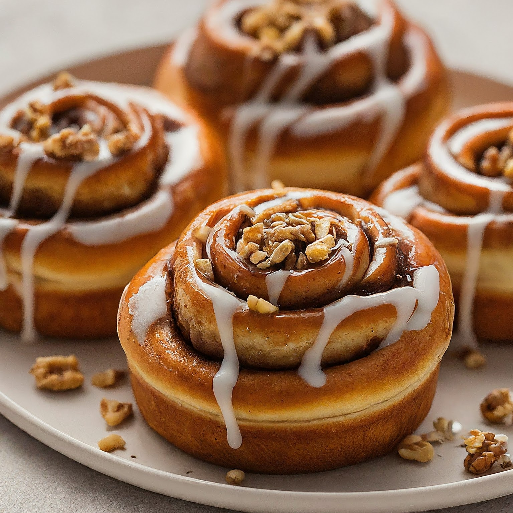

Cinnamon Rolls
Ingredients:
For the Dough:
4 ½ cups (2 ¼ pounds) all-purpose flour, plus extra for dusting
2 ¼ teaspoons active dry yeast (1 packet)
½ cup warm milk (105°F to 115°F)
½ cup granulated sugar
1 teaspoon salt
1 cup (2 sticks) unsalted butter, softened
3 large eggs, at room temperature
For the Cinnamon Filling:
1 cup packed light brown sugar
2 tablespoons ground cinnamon
¼ teaspoon salt
4 tablespoons unsalted butter, softened
For the Cream Cheese Icing (Optional):
4 ounces cream cheese, softened
¼ cup unsalted butter, softened
2 cups powdered sugar
1 teaspoon vanilla extract
2-3 tablespoons milk
Instructions:
Make the Dough:
Activate the Yeast: In a large bowl, combine the warm milk and yeast. Let it sit for 5 minutes, or until the yeast is foamy and active.
Whisk Dry Ingredients: In another large bowl, whisk together the flour, sugar, and salt.
Combine Wet and Dry Ingredients: Add the softened butter and eggs to the yeast mixture. Beat with an electric mixer fitted with a dough hook attachment, or by hand, until well combined. Gradually add the dry ingredients to the wet ingredients, mixing until a soft dough forms.
Knead the Dough: Transfer the dough to a lightly floured surface. Knead for 8-10 minutes, or until the dough is smooth and elastic. Add a little more flour, one tablespoon at a time, if the dough is too sticky.
First Rise: Place the dough in a large greased bowl. Cover the bowl with plastic wrap or a clean kitchen towel. Let the dough rise in a warm place for 1-2 hours, or until doubled in size.
Make the Filling:
Combine the Ingredients: In a small bowl, whisk together the brown sugar, cinnamon, and salt. Set aside.
Soften the Butter: Let the softened butter be at room temperature and spreadable.
Assemble the Rolls:
Roll Out the Dough: On a lightly floured surface, roll out the dough into a large rectangle, about 18x24 inches.
Spread the Filling: Spread the softened butter evenly over the dough. Then, sprinkle the cinnamon sugar mixture generously over the buttered dough.
Roll Up the Dough: Starting from a long edge, tightly roll up the dough like a jelly roll. Pinch the seam to seal it.
Cut the Rolls: Use a sharp knife to cut the dough roll into 12 equal slices (about 1 ½ - 2 inches thick).
Second Rise:
Arrange the Rolls: Place the cinnamon rolls in a greased 9x13 inch baking dish, leaving a little space between each roll for them to expand. Cover the dish loosely with plastic wrap or a clean kitchen towel.
Let Rise Again: Let the rolls rise in a warm place for another 30-45 minutes, or until they are nearly doubled in size.
Bake the Rolls:
Preheat the Oven: Preheat your oven to 375°F (190°C).
Bake the Rolls: Bake the cinnamon rolls for 20-25 minutes, or until golden brown on top.
Cool Slightly: Remove the rolls from the oven and let them cool on a wire rack for a few minutes before frosting (optional).
Make the Cream Cheese Icing (Optional):
Cream the Cheese and Butter: In a medium bowl, cream together the softened cream cheese and butter until smooth.
Add Powdered Sugar and Vanilla: Beat in the powdered sugar and vanilla extract until the icing is light and fluffy. Add milk, one tablespoon at a time, until the icing reaches your desired consistency.
Frost the Rolls: Spread the cream cheese icing over the warm cinnamon rolls.